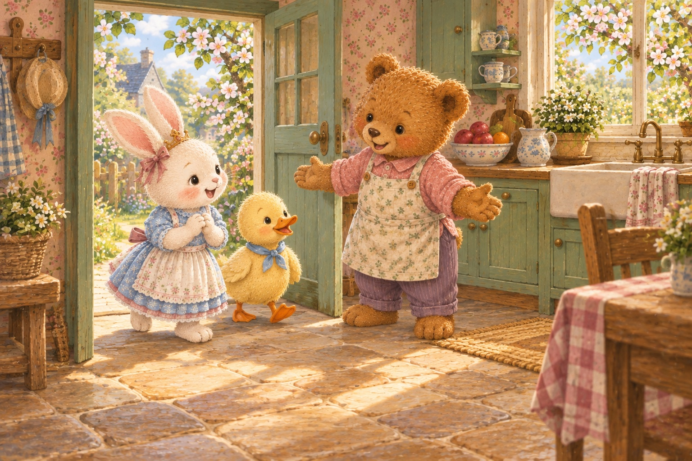

A story to make together

This is a screen-based measuring story, not a recipe or a recommended serving size. A scoop here means the same 25 mL measure throughout. The diagrams are simplified; real fruit yield and mixing colours are not calculated.
The free-recipe route uses opaque mugs. Its record adds the measured ingredient portions, not liquid layers or predicted blend colours; real mixtures need not have perfectly additive final volumes. No colour result is simulated or graded.
For any real preparation, a grown-up checks ingredients, allergies, suitable textures, amounts and equipment, and supervises. Use treated or pasteurised juice and drinking water. Wash hands and produce appropriately. Blades, blenders and heat are grown-up jobs. Tasting is optional.
No scores, recording, uploads or learning profiles are collected. A selected answer does not tell us how a child worked it out. This story is awaiting parent playtest.
This starts new recipes. Your current making in this book will be replaced. Other stories and drawings stay untouched.